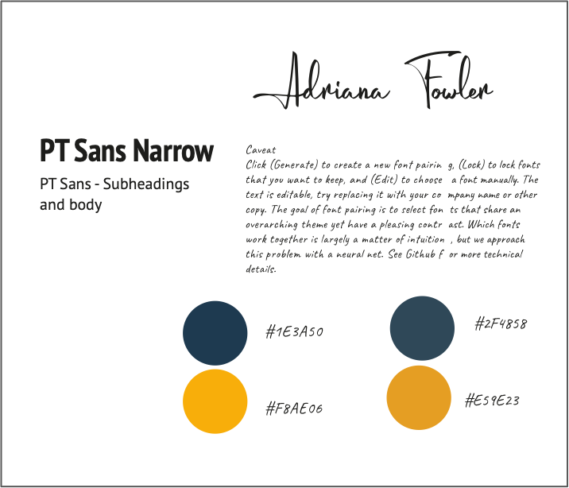

Case Study for Portfolio Project
Forent End Course for Designers
Overview:
Context:
Part- of Front-Ended course for Designers. As UX Designer I intended to get familiar with HTML, CSS and JavaScript.
Objective:
The purpose of the project was to learn the fundamentals of website design and to build a portfolio site which I could show to potential employers.
Requirements:
Responsive menu, projects’ pages, home page, about page with access to resume file and contact section.
Process and Insights:
One of my first steps was to prepare files and content for my portfolio and provide these with adequate names.
I prepared style document and mockups for each page.
I’ve learned that keeping proper file naming is a necessity in the development world.
After deciding on content and look of the website, I created an HTML file and structured it in the way I could add style to particular elements.
This part of the process helped me to understand the structure of the document and the idea behind styling and manipulating elements within HTML.
I’ve learned about Classes and Id’s , how to link elements and display images.
In addition, I learned how to update my code to GitHub and how to write commits, to have control over changes.
After deciding on text style and colours’ which were consistent with my resume, I created a CSS file and step by step, added a visual identity, style and responsiveness to my website. To implement responsive pattern interactivity in the
menu design I added a Java Script file with few lines of code.
I’ve learned the basics of JavaScript and completed several coding challenges which are displayed on CodePen.
The Design: style and mockups:
User Testing, accessibility and debugging:
After building my portfolio website, I’ve conducted user testing. Main goals were to test: esthetics, readability, functionality, reliability and professionalism. I recruited five participants, age between 30-50, who were working either in IT recruitment or on managerial positions in other sectors. Testing uncovered few issues with the functionality of my website: Quality of the certain images wasn’t good enough, hero section needed more clarity, contact section seemed to be confusing with it’s ‘skype me’ link and lack of possibility to copy e-mail and about page needed visual improvement.
After correcting most of usability problems and implementing suggestions from test participants I downloaded linters for HTML CSS and JavaScript into my code editor and removed remaining errors. One of my final steps was to asses and improve an accessibility of the website. I added ‘alt’ attribute to images elements in the HTML and checked contrast between text, elements and the background. It occurred, that there was one major accessibility issue with links’ contrast ratio. I solved this problem by changing colour of the links in CSS file.
Cross browser testing:
Final step before publishing the website, was to conduct cross browser testing, which means to check how my website looks and functioning in different browsers and on different devices. Apart from one minor problem with a font which was used only in one element of the website, there was no major issues. Browsers, replaced unsupported font with default one and, as this didn’t really affect a design of the page, I treated it as a not a priority issue.
After cross browser testing, I could finally upload my page into GitHub Pages and publish it online. I chose this service, because I’m still working on interactivity of my website and updating code on GitHub comes handy for me at the moment, but at the same time I can already display my portfolio to potential employers.
Retrospective:
The most challanging part of the project was to get familiar with JavaScript. (Or in my situation also a reminder of courses I've taken some time ago). As this programming language requires much more time to learn and practice to internalise it’s syntax and to start feeling confident in using it, I still feel that I’ve received a decent foundations to deepen my knowledge in this subject. I’ve discovered, that even fundamental knowledge of website structure, styling and interactivity gives different perspective on digital products. Ability to code is another great skill which I would like to possess, as for me, it gives a freedom of implementing design ideas. It is also a great brain exercise which strengthens your problem solving skills and while it is not a must for designers, it could be a great asset to have.
What I’ve learned - summary:
- How to structure website in HTML
- How to apply basic styling and animation using CSS
- How to work with layouts and apply responsiveness in CSS
- Basic concepts of JavaScript
- How to use JavaScript and jQuery (basics). (Exmaples on my website: carousels, lightboxes, responsive navigation).
- How to work with GitHub and write commits.
- How to format and debug code with online and plug ins and linters.
- How to conduct cross browser testing and solve basic accessibility issues.